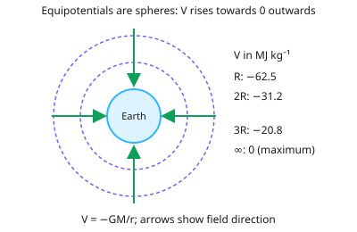

A-level Physics Year 13 · Topic 28
Gravitational potential and orbits
Gravitational potential and orbits extends gravity from near the Earth's surface to the whole Solar System.
We will use gravitational potential and potential energy, and link potential gradient to field strength.
Then we apply Kepler's laws, study satellites and geostationary orbits, and calculate escape velocity and orbital energy.
- 5 subtopics
- 290 questions
- Free: 28.1 notes and 10 questions
In this topic
- 28.1Gravitational potential and gravitational potential energyFree below · 60 questions
- 28.2Potential gradient and gravitational field strengthOpen in Full Marks · 57 questions
- 28.3Orbital motion and Kepler's lawsOpen in Full Marks · 62 questions
- 28.4Satellites and geostationary orbitsOpen in Full Marks · 53 questions
- 28.5Escape velocity and orbital energyOpen in Full Marks · 58 questions
28.1 · Free notes
Gravitational potential and gravitational potential energy

Key points
- Gravitational potential (V) at a point is the work done per unit mass in bringing a small test mass from infinity to that point. Its unit is J kg⁻¹.
- For a point mass, or outside a spherical planet, V = −GM/r. Here r is measured from the centre of the mass, not from the surface.
- V is negative because gravity is attractive. The field does work as the mass moves in from infinity, where V = 0 is the maximum value, so V gets more negative closer to the mass.
- Potential is a scalar. Potentials from several masses add algebraically, with no directions to consider.
- Gravitational potential energy E = mV = −GMm/r, in joules. It is the energy of the mass in the field, and it is zero at infinity.
- Moving from r₁ to r₂: ΔE = mΔV = GMm(1/r₁ − 1/r₂). Near the surface this becomes ΔE = mgΔh, valid only while g is approximately constant.
- Equipotential surfaces are spheres around a point mass. No work is done moving along one, and field lines cross them at right angles.
- Escape speed: ½mv² = GMm/R, so v = √(2GM/R). For Earth this is about 11.2 km s⁻¹, and it is independent of the escaping mass.
- The escape energy per unit mass is −V at the starting point. For example, at Earth's surface it is about 6.25 × 10⁷ J kg⁻¹.
- On a graph of V against r, the curve rises towards zero as r increases (shape ∝ −1/r). Doubling r halves the magnitude of V.
- Common errors: dropping the minus sign, using mgh over large heights, and measuring r from the surface instead of the centre.
In more detail
- Worked surface potential: for Earth (M = 5.97 × 10²⁴ kg, R = 6.37 × 10⁶ m), V = −GM ÷ R = −6.25 × 10⁷ J kg⁻¹.
- Worked energy to lift: a 1000 kg satellite from the surface to 300 km → ΔE = GMm(1/r₁ − 1/r₂) = 2.8 × 10⁹ J, a little less than mgh = 2.9 × 10⁹ J, because g weakens with height.
- Worked Moon: V = −6.67 × 10⁻¹¹ × 7.35 × 10²² ÷ 1.74 × 10⁶ = −2.8 × 10⁶ J kg⁻¹, over 20 times shallower than Earth's.
- Equipotentials: no work is done moving along one; field lines always cross them at right angles.
Practice
Gravitational potential and gravitational potential energy: 10 questions
Pick an answer to check it, or open the answer for the explanation.
1. What is the definition of gravitational potential at a point in a gravitational field?
- Force per unit mass on a small mass placed at that point
- Work done per unit mass moving a mass from the surface to the point
- Work done per unit mass moving a small mass from infinity to the point
- Gravitational potential energy of the mass at that point
Show answer
C: Work done per unit mass moving a small mass from infinity to the point. Potential is the work done per unit mass bringing a small test mass from infinity to the point. Force per unit mass is the field strength, g.
2. Why is gravitational potential negative at every point near a planet?
- Potential energy is always lost as a mass moves to a higher orbit
- Gravity repels masses away from the planet
- Potential is defined as zero at the planet's surface
- Gravity attracts, so work is done by the field bringing mass from ∞
Show answer
D: Gravity attracts, so work is done by the field bringing mass from ∞. V = 0 at infinity and the field does positive work as a mass moves in, so the potential falls below zero. Gravity is attractive, not repulsive.
3. Moon: M = 7.35×10²² kg, R = 1.74×10⁶ m, G = 6.67×10⁻¹¹ N m² kg⁻². Minimum energy per kilogram to take a mass from its surface to infinity?
- 4.9×10¹² J kg⁻¹
- 2.8×10⁶ J kg⁻¹
- 1.4×10⁶ J kg⁻¹
- 5.6×10⁶ J kg⁻¹
Show answer
B: 2.8×10⁶ J kg⁻¹. Escape energy per kg = −V = GM/R = 6.67×10⁻¹¹ × 7.35×10²² ÷ 1.74×10⁶ = 2.8×10⁶ J kg⁻¹.
4. A 1000 kg satellite is lifted from Earth's surface to height R above it (r = 2R). GM = 3.98×10¹⁴ SI units, R = 6.37×10⁶ m. What is the increase in GPE?
- 6.2×10¹⁰ J
- 1.6×10¹⁰ J
- 3.1×10¹⁰ J
- 1.2×10¹¹ J
Show answer
C: 3.1×10¹⁰ J. ΔE = GMm(1/R − 1/2R) = GMm/2R = 3.98×10¹⁴ × 1000 ÷ 1.27×10⁷ = 3.1×10¹⁰ J. Using mgR gives double, because g falls with height.
5. Potential at Earth's surface is −62.5 MJ kg⁻¹. What is the potential at a distance 3R from Earth's centre?
- −187 MJ kg⁻¹
- −31.3 MJ kg⁻¹
- −6.9 MJ kg⁻¹
- −20.8 MJ kg⁻¹
Show answer
D: −20.8 MJ kg⁻¹. V ∝ 1/r, so at 3R the potential is −62.5 ÷ 3 = −20.8 MJ kg⁻¹. Dividing by 9 wrongly treats V as an inverse-square quantity.
6. A planet has potential −2.0×10⁷ J kg⁻¹ at r = 2.0×10⁷ m from its centre. Find its mass. G = 6.67×10⁻¹¹ N m² kg⁻².
- 1.2×10²⁵ kg
- 3.0×10²⁴ kg
- 1.5×10¹⁰ kg
- 6.0×10²⁴ kg
Show answer
D: 6.0×10²⁴ kg. V = −GM/r, so M = −Vr/G = 2.0×10⁷ × 2.0×10⁷ ÷ 6.67×10⁻¹¹ = 6.0×10²⁴ kg.
7. Which statement about equipotential surfaces around a spherical planet is correct?
- They are all at the same potential as infinity
- No work is done moving a mass along an equipotential surface
- Equipotentials for equal ΔV are equally spaced
- Field lines run parallel to the equipotentials
Show answer
B: No work is done moving a mass along an equipotential surface. Potential is constant on an equipotential, so ΔV = 0 and no work is done. Field lines meet them at right angles, and equal ΔV steps get wider with distance.
8. Which is a correct unit for gravitational potential?
- N m⁻¹
- m² s⁻²
- J kg
- N kg⁻¹
Show answer
B: m² s⁻². V is work per unit mass: J kg⁻¹ = (kg m² s⁻²) ÷ kg = m² s⁻². N kg⁻¹ is the unit of field strength.
9. Using V = −6.25×10⁷ J kg⁻¹ at Earth's surface, what is the escape speed?
- 7.9×10³ m s⁻¹
- 1.1×10⁴ m s⁻¹
- 1.25×10⁸ m s⁻¹
- 2.2×10⁴ m s⁻¹
Show answer
B: 1.1×10⁴ m s⁻¹. ½v² = −V so v = √(2 × 6.25×10⁷) = 1.1×10⁴ m s⁻¹. Missing the factor of 2 gives the circular orbital speed, 7.9×10³ m s⁻¹.
10. Planet X has twice Earth's mass and twice Earth's radius. How does the potential at its surface compare with Earth's?
- Half as negative
- The same
- Twice as negative
- Four times as negative
Show answer
B: The same. V = −GM/R. Doubling both M and R leaves M/R unchanged, so the surface potential is the same as Earth's.
Keep going in Full Marks
Full Marks has 60 questions on Gravitational potential and gravitational potential energy (50 more than here), set out in practice levels. You also get notes and 3D models for all 5 subtopics of Gravitational potential and orbits, plus games, timed exams and past papers.